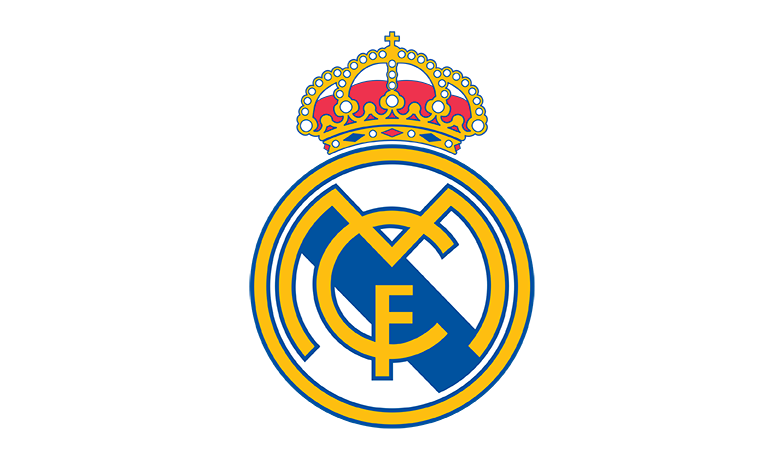

Real Madryt, hiszp. Real Madrid Club de Fútbol – hiszpański klub sportowy powstały w 1902 roku. Od 1947 roku drużyna ta rozgrywa domowe spotkania na stadionie Santiago Bernabéu, nazwanym na cześć byłego prezesa, za którego czasów klub zdobył najwięcej trofeów.
